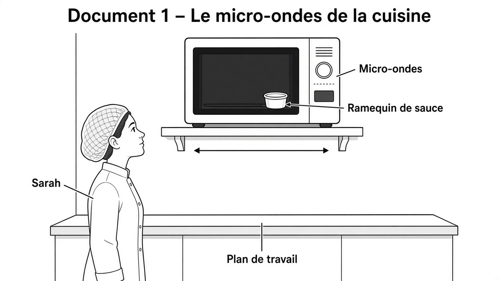

Consignes : Répondre avec des phrases complètes. Détailler les calculs et indiquer les unités. Pour les questions 3 et 5, préciser clairement le référentiel utilisé.
Questions
1Chef Rémi veut savoir si Léa sert les plats assez rapidement. Calculer la vitesse moyenne de Léa entre le passe et la terrasse. Écrire la formule utilisée, puis le résultat avec son unité.
2Théo pousse le chariot de service jusqu'à la chambre froide. Sarah relève sa vitesse :
| Temps (s) | 0 | 1 | 2 | 3 | 4 | 5 | 6 | 7 |
|---|---|---|---|---|---|---|---|---|
| Vitesse (m/s) | 0 | 0,5 | 1 | 1 | 1 | 1 | 0,5 | 0 |
Distinguer les différentes étapes du déplacement du chariot en les classant en mouvement accéléré, uniforme ou ralenti. Indiquer pour chaque étape ce qui permet de la reconnaître dans le tableau.
3Sarah place un ramequin de sauce au bord du plateau tournant du micro-ondes. Décrire le mouvement du ramequin pendant le réchauffage, observé depuis le plan de travail de la cuisine. Préciser le référentiel et la forme de la trajectoire (Document 1).
4Aider Chef Rémi en exprimant en m/s la vitesse moyenne de Malik affichée par l'application de livraison. Détailler la méthode de conversion.
5Léa traverse la salle en portant une assiette sur son plateau. Elle dit à Sarah : « Regarde, mon assiette ne bouge pas, elle est bien stable ! » Un client assis à sa table voit pourtant l'assiette arriver vers lui. Expliquer à Sarah pourquoi Léa et le client ont tous les deux raison, en utilisant la notion de référentiel.
6À partir du Document 2, analyser la livraison effectuée par Malik :
- repérer les moments où Malik est arrêté et proposer une raison à chaque arrêt ;
- comparer sa vitesse dans la rue piétonne et sur la piste cyclable ;
- justifier vos réponses à l'aide de l'allure de la courbe.
Documents
Document 1 — Le micro-ondes de la cuisine

Document 2 — Le trajet de Malik
Devoir blanc — Physique-Chimie 3e prépa-métiers